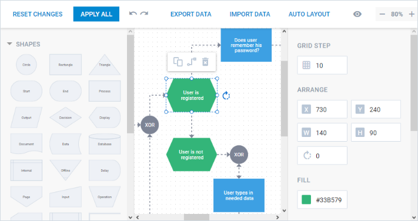
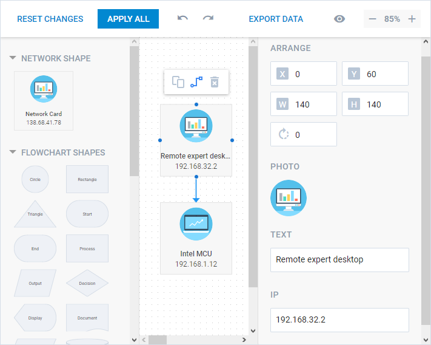

Diagram Editor
The dhtmlxDiagram component provides a special Editor mode that allows you to try and apply your designer skills in building neat and nice-looking diagrams.
In order to initialize a Diagram editor, you need to use the DiagramEditor instance. In all other aspects the initialization stage is the same as for the Diagram component: the constructor function takes as parameters either an HTML container or the document body and a configuration object.
var editor = new dhx.DiagramEditor(document.body, {// editor config settings});
It is possible to load an appropriate data set into the editor via the parse method.
editor.parse(data);
Related sample: Basic editor - DHTMLX Diagram
Configuration properties
You can use the following properties specific for the Diagram Editor in its configuration object:
- type - (string) the type of the edited diagram, "org" to render an organization chart
- shapeType - (string) the type of the shapes, "card" by default. This value is applied, if the shape config doesn't contain the "type" property
- defaults - (object) the default configuration of a shape. For more details about the property, see the defaults configuration option of Diagram
- shapeSections - (object) creates sections for structuring shapes in the left panel
- shapeBarWidth - (number|string) sets the width of the left panel of the editor, 295px by default
- scalePreview - (number) defines the scale of shapes rendered in the left panel of the editor, 0.5 by default. The property can be redefined for each type of a shape via the scale attribute of the preview property of default settings
- scale - (number) defines the diagram editor scale
- gapPreview - (number|string) specifies the space on all sides of a shape rendered in the left panel, "6px 8px" by default (sets 6px gap for the top and bottom sides and 8px gap for the right and left sides). The property can be redefined for each type of a shape via the gap attribute of the preview property of default settings
- autoplacement - (object) sets configuration for autoplacement
- gridStep - (number) sets the size of a grid step that defines the step of moving a shape, 10 by default
- editMode - (boolean) switches the editor mode off and shows the preview mode, and vice versa
- reservedWidth - (number) defines the left offset for the diagram
- lineGap - (number) adds an offset for two connected shapes, and fills the gap with an additional line, 10 by default
- controls - (object) shows/hides specified controls in the editor. The object can contain a set of control_name:value pairs where value is true (by default) or false. Here are the list of available controls:
- apply - (boolean) enables the Apply All button
- reset - (boolean) enables the Reset Changes button
- export - (boolean) enables the Export Data button
- import - (boolean) enables the Import Data button
- autoLayout - (boolean) enables the Auto Layout button
- historyManager - (boolean) enables the Undo and Redo buttons
- editManager - (boolean) enables the Edit Mode button
- scale - (boolean) enables the Zoom group of buttons
- gridStep - (boolean) enables the Grid Step sidebar in the right panel of the editor
var editor = new dhx.DiagramEditor(document.body, {
controls: {
import: true,
export: true,
gridStep: false,
autoLayout: false,
apply: false,
reset: false
},
});
Interface
There are four functional parts in the interface of the Diagram editor. They are presented in the image below:

- the toolbar with buttons for controlling the editing process
The toolbar can contain the following buttons:- the Reset Changes button. This button is shown by default and can be hidden via the reset option of the controls config property. The button works in tandem with the ResetButton event and is useful if you want to reset all the applied changes to the previous state.
- the Apply All button. This button is shown by default and can be hidden via the apply option of the controls config property. The button works in tandem with the ApplyButton event and is useful if you want to apply changes made in the editor to the diagram;
- the Import Data button. This button is shown by default and can be hidden via the import option of the controls config property. The button works in tandem with the ImportData event and is useful if you want to import the data from a JSON file to the diagram.
- the Export Data button. This button is shown by default and can be hidden via the export option of the controls config property. The button works in tandem with the ExportData event and is useful if you want to export the data of the diagram to the JSON format.
- the Auto Layout button. This button is shown by default and can be hidden via the autoLayout option of the controls config property. This button works in tandem with the AutoLayout event and is useful if you want to arrange diagram shapes and connectors in the hierarchical structure automatically.
- the Undo and Redo buttons for undoing and redoing changes. They can be hidden via the historyManager option of the controls config property.
- the Edit Mode button to hide and show the editor mode. The button can be hidden via the editManager option of the controls config property.
- the Zoom group of buttons to zoom a diagram in the editor in and out; can be hidden via the scale option of the controls config property.
- the grid area for editing the diagram. It is an area intended for editing shapes and connections between them. It allows setting exact position for the shapes;
- the left panel with a full list of shapes;
- the right panel with a property sheet that provides fields for modifying values of the shapes' attributes
- the Grid Step sidebar provides a field for modifying the step of moving a shape. This sidebar is shown by default and can be hidden via the gridStep option of the controls config property.
Editing shapes
Editing via interface elements
You can drag shapes from the left panel into the grid area to place them on the desired positions and connect them. In the editing mode each selected shape gets resizing handles. You can pull the handles of an editable shape to change its sizes. It is also possible to rotate a shape by clicking a special icon next to it.
When you click any shape, it becomes editable and gets a personal toolbar with editing options.

The toolbar allows:
- creating a copy of the shape;
- activating the mode for setting connections to a different shape;
- deleting the selected shape.
Editing via sidebar options
You can select a shape and use the sidebar to edit its attributes:
|
The image above presents a sidebar for editing flow-chart shapes. The sidebar for editing org-chart shapes looks a little different.
You can also create a sidebar with the necessary set of options for editing a custom shape; see details here.
Editing connectors
Editing via interface elements
When the connection mode is enabled for a shape, you can set links to other shapes, adjust their position and form, as well as delete unnecessary links.
Editing via sidebar options
You can select the necessary connector and update its attributes via the sidebar:
|
Multiselection
It is possible to select several shapes and connectors via hovering them over with the left mouse button pressed. You can also select necessary shapes using keyboard shortcuts - Shift+Left Click.
You can operate all the selected shapes at once, namely:
- to drag the shapes;
- to create a copy of the shapes;
- to paste the shapes;
- to delete this shapes.
Using hotkeys
There is a set of hotkeys you can use while creating a diagram in the editor:
- Shift+Left Click - to select several shapes
- Ctrl+A or Cmd+A (for MAC) - to select all shapes and connectors
- Ctrl+C - to copy a shape/shapes
- Ctrl+V - to paste a shape/shapes
- Ctrl+Z - to revert the latest action
- Del - to delete a shape/shapes
- Arrows - to move a shape or shapes left/right/up/down
Right Panel Customization
Right panel of Diagram Editor possesses a set of defined sidebar options for each shape provided by dhtmlxDiagram. These options can't be changed and completely depend on the type of the shape and on the configuration of the shape.
The same way of rendering sidebar options is applied to a custom shape of the standard configuration. The set of options for editing attributes of the shape depends only on the data set of the shape.
But, in case you are creating more complex custom shape with some custom properties, you can define the sidebar options to be rendered in the right panel for editing the attributes of the custom shape. To do this, you need to make use of the properties attribute of the addShape method:
editor.diagram.addShape("networkCard", {
template: config => (
`<section class='network_template'>
<img src='${config.img}' alt='${config.text}'></img>
<span>${config.text}</span>
<span>${config.ip}</span>
</section>`
),
defaults: {
width: 160,
height: 160,
img: "../common/desktop.svg",
text: "Remote expert desktop",
ip: "192.168.32.2"
},
properties: [ { type: "arrange"}, { type: "img", label: "photo" }, { type: "text" }, { type: "text", label: "IP", property: "ip" } ]
});
Related sample: Network diagram - DHTMLX Diagram
The properties attribute contains a set of objects that defines which sidebar options will be rendered in the right panel of the editor for the shape.
The order of the objects in the array defines the order the sidebar options will be displayed in the right panel.

The property attribute allows specifying the sidebar option where you will be able to edit your custom property. For example, the custom ip property will be edited as a text value in the Text sidebar option.
{ type: "text", label: "IP", property: "ip" }
For details about the types that you can use for editing a custom property, see the addShape article.
Left Panel Customization
Creating Shape Sections

By default, the left panel of the Diagram Editor includes all available shapes provided by dhtmlxDiagram. Besides, all different custom shapes added via the addShape method will appear in the left panel of the editor automatically.
To make working with the editor more convenient you can structure shapes in the left panel by creating a set of sections and placing any desired shapes of dhtmlxDiagram or custom shapes in these sections using the shapeSections property of the configuration object of Diagram Editor.
var editor = new dhx.DiagramEditor(document.body, {
shapeSections: {
"custom shapes": ["networkCard", "medCard"],
"sticky shapes": ["blue", "orange"],
"org chart shapes": ["card", "img-card"],
"flowchart shapes": [true],
"text": ["text"],
},
});
Related sample: Left panel customization - DHTMLX Diagram
The shapeSections object should contain a set of key:value pairs where key is the name of a section and value is an array of string values of the shapes to be rendered in the section.
Setting boolean true as a value of the array will display all available flow-chart shapes in the section.
Setting shape preview
It is possible to customize the appearance of shapes rendered in the left panel via the preview property of the defaults attribute.
preview - (string|object) specifies the settings to the shape displayed in the left panel. The object can contain a set of optional properties:
- img - (string) a path to the image or a base64 image
- width - (number|string) - the width of the image
- height - (number|string) - the height of the image
- gap - (number|string) sets the gapPreview property for the specified type of a shape
- scale - (number) sets the scalePreview property for the specified type of a shape. It can't be applied together with the img property.
Let's consider three possible options of using the preview property:
1. You can specify an image to be shown in the left panel for a certain type of a shape. For this purpose, you need to pass either the URL to load an image from or a base64 image as a string value to the preview property:
var defaults = {
title: "Name and First name",
img: "../avatar-1.jpg",
height: 115, width: 330,
preview: "../shape_preview.png", };
editor.diagram.addShape("template", {
template: template,
defaults: defaults });
2. You can also specify an image and set its width and height via passing an object as a parameter of the preview property:
var defaults = {
title: "Name and First name", email: "some@mail.com",
img: "../avatar-1.jpg", height: 115, width: 330,
preview: { img: "../shape_preview.png", height: 58, width: 165, gap: 2
}
}
editor.diagram.addShape("template", {
template: template,
defaults: defaults });
You can set the precise width and height of the image, but there is no ability to set the scale of the image.
3. You can redefine the scale of the specific type of the shape rendered in the left panel via the scale property:
var defaults = {card: {
preview: {
scale: 0.72, gap: 2
}
}
var editor = new dhx.DiagramEditor(document.body, {
shapeSections: {
"org chart shapes": ["card", "img-card"],
"flowchart shapes": [true]
},
scalePreview: 0.65,
defaults: defaults });
While the scale of the "card"-type shapes is 0.72, the scale of the other shapes in the left panel is 0.65.
Note, that the preview property will be omitted while exporting data to the JSON format.
Editor API
The editor object owns individual methods, properties and events. There is a list of available methods and events applied to the editor object:
Methods
- parse()
loads data into the editor from a local data source
The method takes as a parameter the data that should be parsed into the editor.
var data = [
// shapes
{
"id": "a",
"x": 50,
"y": 53,
"type": "triangle",
"text": "Shape 1",
"height": 50,
"width": 50
},
{
"id": "b",
"x": 367,
"y": 158,
"type": "rectangle",
"text": "Shape 2"
},
// connector
{
"id": "ab",
"from":"a",
"to":"b",
"type": "line"
},
]
var editor = new dhx.FreeEditor("editor_container");
editor.parse(data);
You can load data in any supported data format. See the details in the parse article.
Related sample: Basic editor - DHTMLX Diagram
- serialize()
serializes the data of the editor into an array of JSON objects
var data = editor.serialize();
The method returns an array of JSON objects for each shape and link from the editor data.
- import()
imports data from an existing diagram into the editor
The method takes the diagram object as a parameter.
editor.import(diagram);
- paint()
repaints the editor
editor.paint();
Events
- ApplyButton
fires after the Apply All button has been clicked
editor.events.on("ApplyButton", function(){
console.log("The changes are applied")
});
- ExportData
fires after the Export Data button has been clicked
editor.events.on("ExportData", function() {
console.log("The data are exported to the JSON format")
});
- ImportData
fires after the Import Data button has been clicked
editor.events.on("ImportData", function(data) {
console.log("The data are imported from the JSON file")
});
The event takes the imported data as a parameter.
- AutoLayout
fires after the Auto Layout button has been clicked
editor.events.on("AutoLayout", function() {
console.log("The shapes are arranged automatically")
});
- ChangeGridStep
fires after the value of the grid step has been changed
editor.events.on("ChangeGridStep", function(step) {
console.log("The grid step is changed to:", step)
});
The event takes the current value of the grid step as a parameter.
- ResetButton
fires after the Reset Changes button has been clicked
editor.events.on("ResetButton",function(){
console.log("The changes are reset")
});
- ShapeMove
fires after a shape has been moved
editor.events.on("ShapeMove",function() {
console.log("The shape is moved")
});
- ShapeResize
fires after a shape has been resized
editor.events.on("ShapeResize",function() {
console.log("The shape is resized")
});
- Visibility
fires after the Visibility button has been clicked
editor.events.on("Visibility",function() {
console.log("The side panels are hidden")
});
- ZoomIn
fires after the Zoom In button has been clicked
editor.events.on("ZoomIn",function() {
console.log("The diagram in the editor is zoomed in")
});
- ZoomOut
fires after the Zoom Out button has been clicked
editor.events.on("ZoomOut",function() {
console.log("The diagram in the editor is zoomed out")
});
Localization
It is possible to localize the interface of the Diagram editor into a desired language. For this, you need to provide the corresponding locale settings via the dhx.i18n.setLocale() method. The method takes two parameters: the diagram container and an object that contains rules of localization for a particular country.
//an example of English locale
var locale = {
applyAll: "Apply all",
exportData: "Export Data",
importData: "Import Data",
resetChanges: "Reset Changes",
autoLayout: "Auto Layout",
gridStep: "Grid step",
arrange: "Arrange",
position: "Position",
size: "Size",
color: "Color",
title: "Title",
text: "Text",
image: "Image",
fill: "Fill",
textProps: "Text",
stroke: "Stroke",
shapeSections: "Shapes"
imageUpload: "Click to upload",
emptyState: "Select a shape or a connector"
};
dhx.i18n.setLocale("diagram", locale);
After that, you need to initialize the editor and check how the labels' names have changed.
var editor = new dhx.DiagramEditor(document.body, {//config options});
Related sample: Localization - DHTMLX Diagram
Back to top